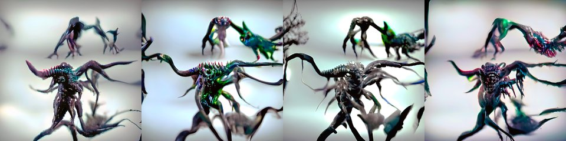

by Mad Monk · Async Art Master #5807 · four-phase · time rule: UTC
Updates four times a day to reflect sunrise / day / sunset / night cycles.

Sunrise 06:00–06:59 · Day 07:00–17:59 · Sunset 18:00–18:59 · Night 19:00–05:59 (UTC)
The full-size files live on IPFS; each is linked on three public gateways, in the order to try them (gateway.pinata.cloud, ipfs.io, dweb.link). Every line says what our own check found: 5 we keep this file pinned, 1 our own copy, pinned here and verified on upload.
QmVVbPuxjWdxCa… gateway.pinata.cloud · ipfs.io · dweb.link — we keep this file pinned, checked 2026-09-23 09:13QmddGjaVoHhtnx… gateway.pinata.cloud · ipfs.io · dweb.link — we keep this file pinned, checked 2026-09-23 09:13QmbDKL17znBkBr… gateway.pinata.cloud · ipfs.io · dweb.link — we keep this file pinned, checked 2026-09-23 09:13QmZqn8e3eUwzZj… gateway.pinata.cloud · ipfs.io · dweb.link — we keep this file pinned, checked 2026-09-23 09:13bafybeibon4hnr… gateway.pinata.cloud · ipfs.io · dweb.link — our own copy, pinned here and verified on upload, checked 2026-09-22QmQ7FauJZP6idU… gateway.pinata.cloud · ipfs.io · dweb.link — we keep this file pinned, checked 2026-09-23 09:13QmddGjaVoHhtnx… gateway.pinata.cloud · ipfs.io · dweb.link — we keep this file pinned, checked 2026-09-23 09:13QmddGjaVoHhtnx… gateway.pinata.cloud · ipfs.io · dweb.link — we keep this file pinned, checked 2026-09-23 09:13QmZqn8e3eUwzZj… gateway.pinata.cloud · ipfs.io · dweb.link — we keep this file pinned, checked 2026-09-23 09:13QmVVbPuxjWdxCa… gateway.pinata.cloud · ipfs.io · dweb.link — we keep this file pinned, checked 2026-09-23 09:13QmbDKL17znBkBr… gateway.pinata.cloud · ipfs.io · dweb.link — we keep this file pinned, checked 2026-09-23 09:13Monsters & Mythology: Zmaj by Mad Monk 4 pieces minted as 1/1 on Async Art Conceptualized, Created and Minted 2022 ... Zmaj (Zmaj or Dragon) is known in almost all World's cultures. However Zmaj in Slavic folklore is represented as rather benign creature, created from certain animals which lived up to 30 or 100 years (rooster, carp, horse, ox, ram or dog). It always had either one or even number of heads and traits from animal that it borrowed. It fought against Azhdaya and it was invisible to everybody, except to woman whom he falls in love. Relationship between Zmaj and human women could bring zmajevite children (Dragonborn children) and they differed from humans by having large head…
async.art · OpenSea · Etherscan
Generated archive pages. Content identifiers point to the public IPFS network.